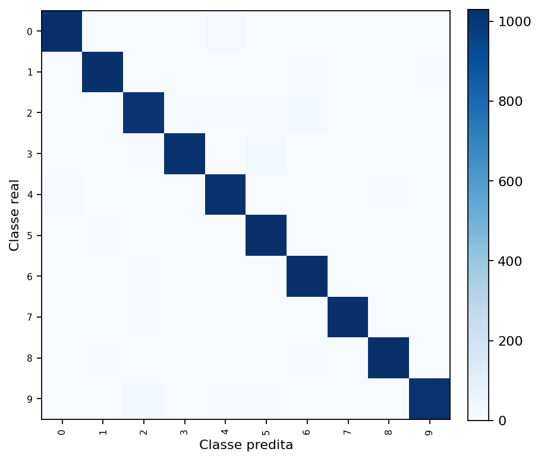
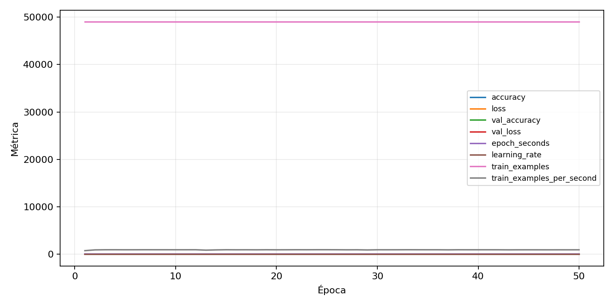

| n_samples | 10500 |
|---|---|
| loss | 0.14364033937454224 |
| accuracy | 0.9733333333333334 |
| balanced_accuracy | 0.9733333333333333 |
| macro_f1 | 0.9733468917612372 |


| Índice | Classe | Suporte | Precisão | Recall | F1 |
|---|---|---|---|---|---|
| 0 | 0 | 1050 | 0.9762357414448669 | 0.9780952380952381 | 0.9771646051379638 |
| 1 | 1 | 1050 | 0.9707822808671065 | 0.9809523809523809 | 0.975840833728091 |
| 2 | 2 | 1050 | 0.9599236641221374 | 0.9580952380952381 | 0.9590085795996186 |
| 3 | 3 | 1050 | 0.9817307692307692 | 0.9723809523809523 | 0.9770334928229665 |
| 4 | 4 | 1050 | 0.9631379962192816 | 0.9704761904761905 | 0.9667931688804554 |
| 5 | 5 | 1050 | 0.9661654135338346 | 0.979047619047619 | 0.9725638599810785 |
| 6 | 6 | 1050 | 0.9623706491063029 | 0.9742857142857143 | 0.9682915286322764 |
| 7 | 7 | 1050 | 0.9818355640535373 | 0.9780952380952381 | 0.9799618320610688 |
| 8 | 8 | 1050 | 0.9864864864864865 | 0.9733333333333334 | 0.9798657718120806 |
| 9 | 9 | 1050 | 0.9854651162790697 | 0.9685714285714285 | 0.9769452449567723 |
{"adapter":"kmnist","balance_mode":"all_raw","class_names":["0","1","2","3","4","5","6","7","8","9"],"dataset":"kmnist","dataset_options":{},"dataset_root":"/home/msduda/datasets-tcc/kmnist","native_channels":1,"normalization":"unit_interval","num_classes":10,"protocol":{"checkpoint_monitor":"val_macro_f1","dtype_policy":"mixed_float16","early_stopping":{"patience":50,"restore_best_weights":true},"evaluation_augmentation":false,"input_channels":"native","optimizer":"Adam","pretrained_weights":false,"reduce_lr_on_plateau":{"factor":0.3,"min_lr":1e-07,"patience":50},"resize":"proportional_padding","test_time_augmentation":false,"training_from_scratch":true},"seed":42,"source_fingerprint":"8928d478d8d23938a73b4f4a92c407bf3d74beff1e0e67e3644d6ecdc30cf828","source_manifest":{"class_names":["0","1","2","3","4","5","6","7","8","9"],"joined_samples":70000,"metadata":{"layout":"kmnist-component-npz"},"name":"kmnist","native_channels":1,"source_path":"/home/msduda/datasets-tcc/kmnist","splits":{"test":10000,"train":60000},"target_size":64},"target_size":64,"test_fraction":0.15,"train_fraction":0.7,"training":{"augmentation":{"brightness_delta":0.0,"contrast_lower":1.0,"contrast_upper":1.0,"cutout_max_frac":0.0,"cutout_prob":0.0,"flip_lr":false,"noise_std":0.0,"translate_frac":0.0,"zoom_max":1.0,"zoom_min":1.0},"batch_size":496,"default_image_size":64,"dtype_policy":"mixed_float16","early_stopping_patience":50,"extra_fraction":0.0,"image_size_overrides":{"gtsrb":128},"keras_verbose":1,"learning_rate":0.0003,"max_epochs":50,"preprocess_cache_max_mib":0,"reduce_lr_factor":0.3,"reduce_lr_min_lr":1e-07,"reduce_lr_patience":50,"shuffle_buffer_max_mib":0},"validation_fraction":0.15}
{"epochs_completed":50,"epochs_recorded":50,"evaluation_seconds":18.3576377970021,"fit_seconds_current_attempt":3098.357783133004,"max_epoch_seconds":64.45163837000291,"max_epochs":50,"mean_epoch_seconds":52.214370350500104,"mean_train_examples_per_second":939.5185334440399,"median_train_examples_per_second":946.6010229475692,"min_epoch_seconds":51.10621541400178,"selected_checkpoint":"/mnt/e/tcc-benchmark/outputs/kmnist-alldata-noaug-batch-sweep-2026-08-06/batch-496/kmnist/runs/kmnist__unit_interval__all_raw__seed-42/checkpoints/best.keras","total_seconds":2610.718517525005,"training_seconds":2610.718517525005,"wall_seconds_current_attempt":3120.3611510820047}
{"elapsed_seconds":3120.4073913469983,"event_counts":{"data_preparation_end":1,"data_preparation_start":1,"epoch_end":50,"evaluation_end":1,"evaluation_start":1,"fit_end":1,"fit_start":1,"periodic":615,"run_completed":1,"train_start":1},"generated_at":"2026-08-08T10:44:19.230+00:00","gpu_backend":"pynvml","interval_seconds":5.0,"metrics":{"cpu_percent":{"count":673,"max":16.9,"mean":13.085141158989599,"min":0.0,"p50":13.5,"p95":16.2},"disk_data_free_bytes":{"count":673,"max":998270787584.0,"mean":998270726290.0684,"min":998270717952.0,"p50":998270726144.0,"p95":998270726144.0},"disk_data_percent":{"count":673,"max":2.7,"mean":2.7,"min":2.7,"p50":2.7,"p95":2.7},"disk_data_total_bytes":{"count":673,"max":1081101176832.0,"mean":1081101176832.0,"min":1081101176832.0,"p50":1081101176832.0,"p95":1081101176832.0},"disk_data_used_bytes":{"count":673,"max":27838103552.0,"mean":27838095213.93165,"min":27838033920.0,"p50":27838095360.0,"p95":27838095360.0},"disk_output_free_bytes":{"count":673,"max":207032389632.0,"mean":207019603873.66418,"min":207018520576.0,"p50":207019372544.0,"p95":207019622400.0},"disk_output_percent":{"count":673,"max":79.3,"mean":79.3,"min":79.3,"p50":79.3,"p95":79.3},"disk_output_total_bytes":{"count":673,"max":1000186310656.0,"mean":1000186310656.0,"min":1000186310656.0,"p50":1000186310656.0,"p95":1000186310656.0},"disk_output_used_bytes":{"count":673,"max":793167790080.0,"mean":793166706782.3358,"min":793153921024.0,"p50":793166938112.0,"p95":793167704064.0},"elapsed_seconds":{"count":673,"max":3120.354949,"mean":1562.786658947994,"min":0.025896,"p50":1560.685092,"p95":2978.2472206},"gpu_count":{"count":673,"max":1.0,"mean":1.0,"min":1.0,"p50":1.0,"p95":1.0},"gpu_memory_percent":{"count":673,"max":51.97162628173828,"mean":51.560544896798895,"min":37.836313247680664,"p50":51.783180236816406,"p95":51.783180236816406},"gpu_memory_total_bytes":{"count":673,"max":8589934592.0,"mean":8589934592.0,"min":8589934592.0,"p50":8589934592.0,"p95":8589934592.0},"gpu_memory_used_bytes":{"count":673,"max":4464328704.0,"mean":4429017081.913818,"min":3250114560.0,"p50":4448141312.0,"p95":4448141312.0},"gpu_temperature_c":{"count":673,"max":51.0,"mean":41.551263001485886,"min":38.0,"p50":41.0,"p95":49.0},"gpu_utilization_percent":{"count":673,"max":99.0,"mean":20.227340267459137,"min":1.0,"p50":10.0,"p95":60.39999999999998},"process_cpu_percent":{"count":673,"max":215.3,"mean":171.7450222882615,"min":0.0,"p50":179.3,"p95":210.7},"process_read_bytes":{"count":673,"max":10919936.0,"mean":10896479.857355127,"min":7933952.0,"p50":10919936.0,"p95":10919936.0},"process_rss_bytes":{"count":673,"max":3870056448.0,"mean":3715285466.72214,"min":1029541888.0,"p50":3815337984.0,"p95":3835367424.0},"process_vms_bytes":{"count":673,"max":49858453504.0,"mean":49553750791.98811,"min":39581450240.0,"p50":49705541632.0,"p95":49788743680.0},"process_write_bytes":{"count":673,"max":1392640.0,"mean":1374497.0936106984,"min":4096.0,"p50":1392640.0,"p95":1392640.0},"ram_available_bytes":{"count":673,"max":15521955840.0,"mean":12999501741.836554,"min":12845236224.0,"p50":12898525184.0,"p95":13503598592.0},"ram_percent":{"count":673,"max":22.7,"mean":21.773997028231797,"min":6.6,"p50":22.4,"p95":22.5},"ram_total_bytes":{"count":673,"max":16619085824.0,"mean":16619085824.0,"min":16619085824.0,"p50":16619085824.0,"p95":16619085824.0},"ram_used_bytes":{"count":673,"max":3773849600.0,"mean":3619584082.1634474,"min":1097129984.0,"p50":3720560640.0,"p95":3738886963.2}},"sample_count":673,"schema_version":1}